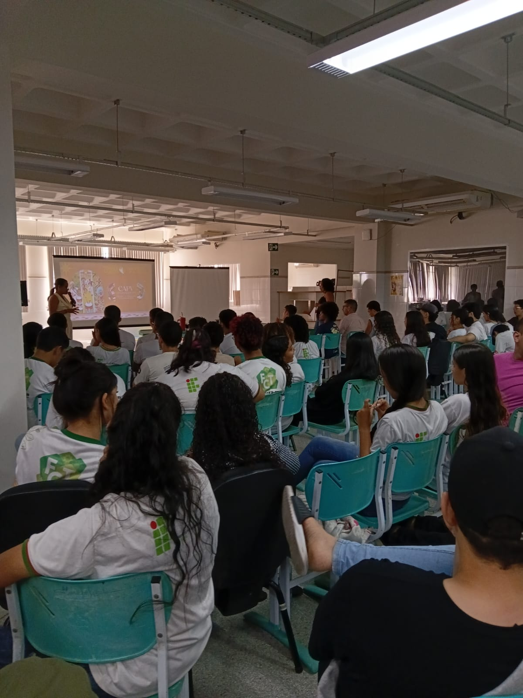
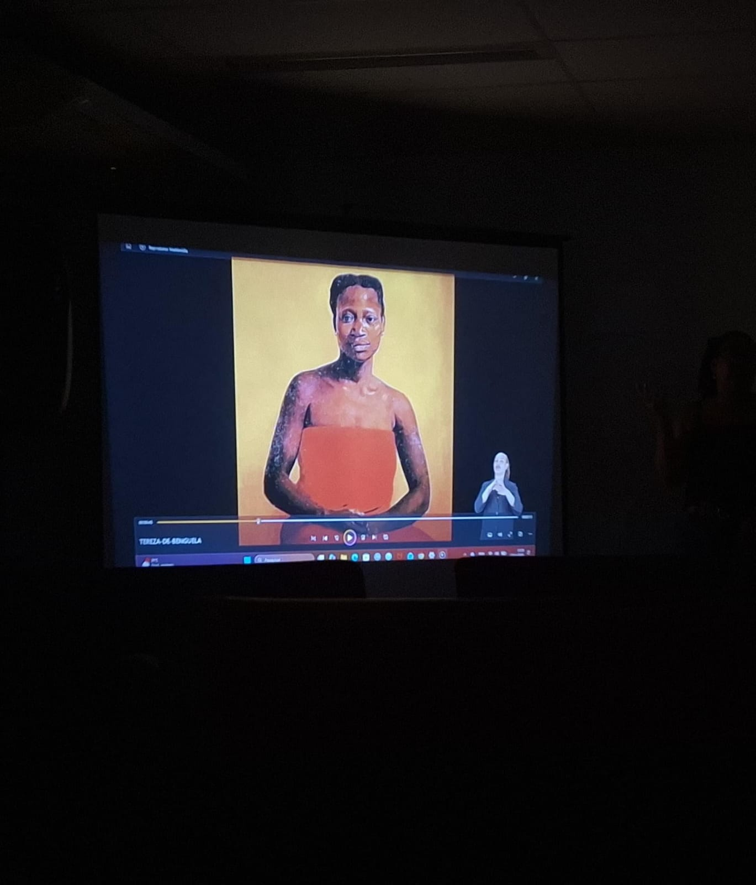
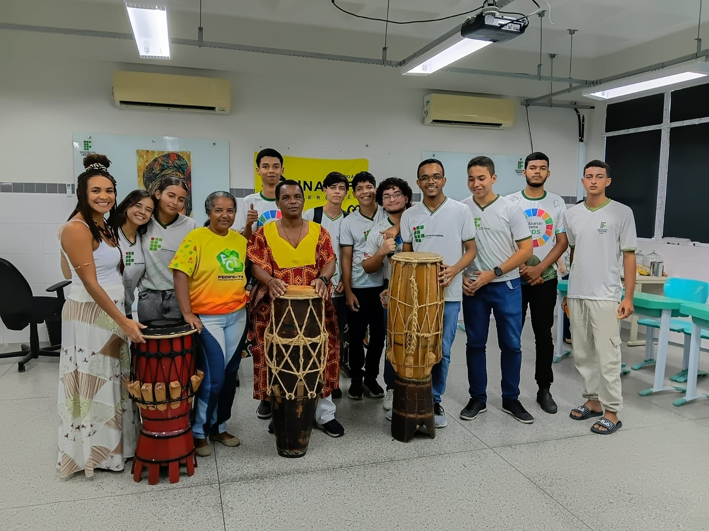

Sobre o Evento
O evento em celebração à Consciência Negra, realizado no Instituto Federal de Sergipe –
Campus Tobias Barreto, reuniu atividades educativas e culturais com o objetivo de
promover reflexões sobre o racismo, a identidade negra, a ancestralidade e a valorização
da cultura afro-brasileira.
A programação contou com palestras, oficinas, debates e experiências culturais,
envolvendo estudantes, professores e convidados.
Programação do Evento
09h às 10h30 — Palestra
Racismo Estrutural no Brasil: Raízes Históricas, Impactos e Desafios.
Palestrante: Prof.a Dra. Margarida Maria Araújo Bispo.
Local: Biblioteca

10h às 12h — Oficina
Tecendo Cartografias: escrevivências de mulheres negras em Tobias Barreto.
Oficineiros: estudantes dos projetos PIBIC-EM/CNPq.
Orientação: Prof. Me. Vitor Marques e Iara Vasco.
Local: Sala

10h30 às 12h — Oficina
Óri Sergipano – Mapa Beatriz Nascimento das Danças e Músicas Afro-Sergipanas.
Participação dos alunos do 1ADM.
Orientação: Prof.a Fernanda Bezerra e Prof. Alexmar Lisboa.
Local: Biblioteca

13h às 14h30 — Debate
Cine Debate: Curtas com Ciência em Foco – Especial Mulheres.
Responsável: Prof.a Dra. Viviane da Silva Santos.
Local: Auditório.

13h30 às 15h30 — Oficina
Identidade, ancestralidade, cultura afro-brasileira, resistência e valorização da população negra.
Responsável: Psicopedagoga Adelina Cíntia Santos
Silva do Nascimento – NAPNE.
Local: Biblioteca.

14h às 15h30 — Oficinas
Tambores da Resistência.
Com Mestre Bahia — Sala 2ADM.
Com Mestre Sininho — Sala 2DS.

Artigos

Quilombo Maloca: comunidade quilombola urbana localizada em Aracaju, entre os bairros Getúlio Vargas e Cirurgia. A comunidade tem origem de pessoas negras escravizadas vinda do Vale do Cotinguiba.

Rap do Cirurgia: utiliza da manifestação cultural, rimas e batidas para contar histórias e abordar problemas sociais. O bairro Cirurgia, em Aracaju possui relação histórica com a cultura negra da capital.

Grupo parafusos - Lagarto: Manifestação folclórica tradicional de Lagarto. Tem origem associada à escravidão, quando pessoas negras utilizavam roupas brancas encontradas nas casas grandes para fugir. Os participantes utilizam roupas semelhantes, com vários babados e realizam movimentos giratórios e pulos entre as ruas, acompanhados por músicas.

Lambe-Sujo - Laranjeiras: manifestações culturais de Laranjeiras, realizada no segundo domingo de outubro. A festa representa a luta de negros e indígenas escravizados que buscavam liberdade. Os lambe-Sujos pintam seus corpos de preto e usam roupas vermelhas.

Comunidade Mussuca - Laranjeiras: Comunidade quilombola no município de Laranjeiras. A comunidade preserva suas traduções africanas por meio de danças e manifestações populares, como o Samba de Pareia.

Japaratuba: município sergipano conhecido pela riqueza cultural. Suas expressões culturais envolvem artesanato, grupos folclóricos e a tradicional Festa das Cabacinhas.

Cacumbi: manifestação cultural afro-brasileira presente em diversos municípios de Sergipe. É formado por homens que realizam danças e cantos acompanhado por instrumentos musicais. A manifestação liga religião à dança, homenageando São Benedito e Nossa Senhora do Rosário.